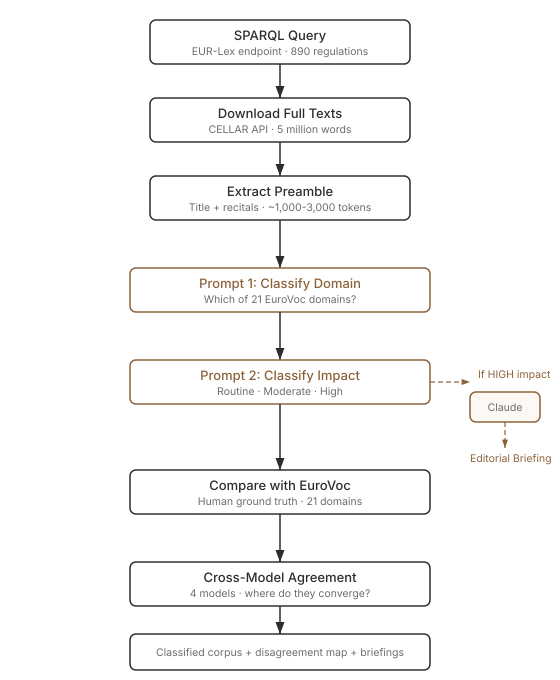
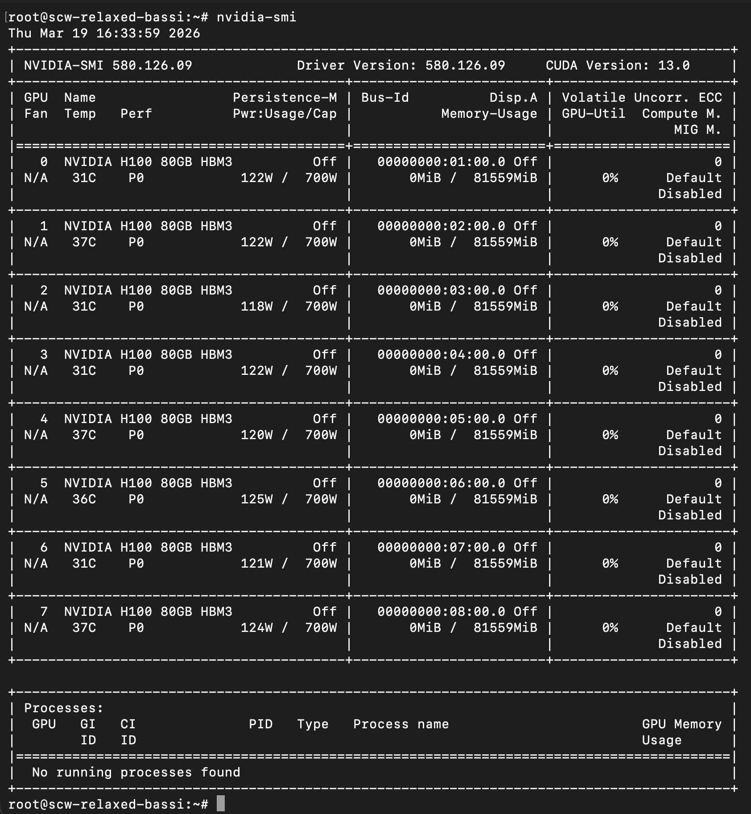
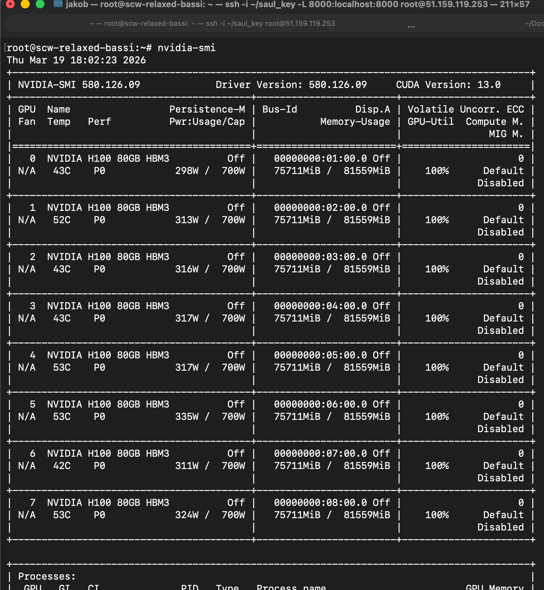
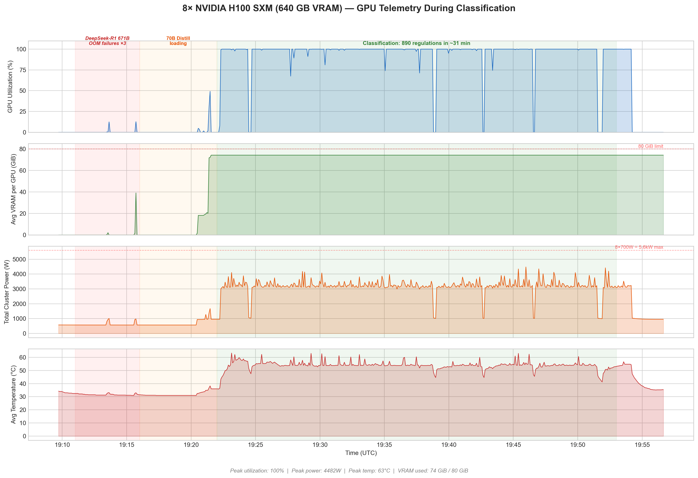

Regulation Radar: What Four LLMs Made of 890 EU Laws
March 2026
Quick Brief
- Experiment: Four open-source LLMs read 890 EU regulations and classified them by thematic domain and regulatory impact – one on a MacBook Air, three on eight Nvidia H100 GPUs on a rented machine in Paris, no external API involved. Where possible, results were compared against EuroVoc, the EU's own classification system.
- Why it matters: LLMs can read regulation. That was never really in question. What actually matters is whether their output is consistent enough to act on, and what happens when you check it against human judgement.
- Key finding: A reasoning model half the size of a legal specialist produced better classifications. On most regulations, the models agreed on the core subject – but not one was classified identically by all four. When they did agree, their accuracy against the human baseline went up. When they didn't, you needed a person.
Context
The neat thing about bureaucracies is that they produce vast amounts of structured text. Which, in theory, should make them ground zero for language models.
In the six months to March 2026, the European Union published 890 pieces of binding legislation. Over five million words of regulations, decisions, and directives – roughly ten times the length of War and Peace, published in six months.
Somebody has to read all of that.
Every one of these 890 regulations is publicly available through EUR-Lex – one of the most thoroughly catalogued legal databases on the planet, well-known to EU legal practitioners and largely invisible to everyone else. EUR-Lex is not a website you browse. It is infrastructure. A SPARQL endpoint lets you query legislation like a database. A bulk download API called CELLAR delivers full texts programmatically, in all 24 official EU languages, with structured metadata attached. It is, essentially, a very well-organised government filing cabinet with an API.
Which raises a system design question. The conventional approach to regulatory monitoring is to give the documents to an analyst, who reads them, highlights the important bits, and has ChatGPT open in a second tab. The unconventional approach is to notice that the filing cabinet already has an API – and that language models can read. You do not put a steam engine on a horse. You build a railway.
The previous experiment in this series asked six models to classify ambiguous legal documents. They disagreed extensively, and there was no ground truth to grade against.
This time, there was an answer key. Sort of.
The EU doesn't just publish legislation. It tags it. Every regulation gets classified using EuroVoc, a controlled vocabulary of roughly 7,000 terms organised into 21 top-level thematic domains – "Agriculture", "Trade", "Finance", "Energy", and so on. The tagging is done by professional librarians at the Publications Office, and has been running since 1995.
It is not a perfect answer key. The librarians assign granular concept descriptors, which get rolled up to the 21 top-level domains through a deterministic mapping. A regulation about agricultural subsidies in the context of trade negotiations might be tagged "Agriculture" by one route and "Trade" by another, and both would be defensible. But it is structured, consistent, and publicly available – considerably better than having no benchmark at all.
The Pipeline
Before any model reads anything, the data needs to arrive. The pipeline works in stages.

The pipeline from query to classified corpus. The model is a swappable component – same pipeline, different model, different results.Stage 1: Fetch. A SPARQL query hits the EUR-Lex endpoint and retrieves all secondary legislation published in the last six months – 890 documents. For each: the CELEX identifier, title, date, document type, and the EuroVoc descriptors assigned by the human librarians. This is the ground truth we will grade against.
Stage 2: Download. The CELLAR API delivers the full text of each regulation. For classification, the full text is overkill – a 400,000-word implementing regulation about carbon border adjustments does not need to be read in its entirety to know it belongs under "Energy" and "Trade". The pipeline extracts the preamble: title, recitals, and the opening articles. Typically 1,000–3,000 tokens – enough to understand what the regulation does, without drowning the model in annexes.
Stage 3: Classify. Each regulation gets two prompts. The first asks the model to assign the document to one or more of the 21 EuroVoc domains – the thematic "what is this about?" question. The second asks for an impact assessment: is this ROUTINE (an administrative amendment nobody outside a specific agency will notice), MODERATE (new requirements for a specific sector), or HIGH (significant new obligations across multiple sectors, major compliance deadlines – on the scale of an AI Act or GDPR)?
Stage 4: Route. A deliberate system design choice. If a regulation is classified as HIGH impact, the pipeline does not just log it and move on. For the genuinely important regulations – the ones a compliance team would actually need to read – you want the best available model writing the briefing, not the cheapest one. So the system immediately routes that regulation to Claude Sonnet via the Anthropic API for a detailed editorial summary: what the regulation does, who is affected, what the deadlines are, and what the worst-case consequence looks like. (Claude Sonnet's exact parameter count and infrastructure are not public – it is a frontier model running on Anthropic's hardware, not something you replicate on a rented GPU cluster.) The cheap open-source model does triage on all 890 documents. The expensive frontier model only sees the ~15 that matter. 95% cost savings versus routing everything through Claude.
The experiment: run this pipeline with four different models at the classification stage. Same 890 regulations, same two prompts, same routing logic. Then compare – with the humans, and with each other.
The Off-the-Shelf Option
If you are going to build a system like this, the dream is running it in real time. A regulation gets published, the pipeline picks it up, and a classified, assessed, briefed result appears in seconds. No cloud costs, no data leaving the machine, no vendor dependency.
The constraints of a consumer machine make that dream distant. An Apple MacBook Air with 16 GB of unified memory can realistically run models up to about 7 billion parameters in quantised form. That rules out anything above the small end of the model spectrum.
Since we are dealing with legal text, the choice fell on an old acquaintance: SaulLM-7B, a legal-domain model fine-tuned on court rulings and legislative text. It is the smaller sibling of the 54B model from the previous experiment – the one that needed an H100 to run. This one fits on a laptop.
The local setup uses the same components as the previous experiments: Ollama handles model management and serves the model as a local API. On Apple Silicon, it uses Metal for GPU acceleration – the M3's integrated GPU, not just the CPU. The model is a swappable component in the pipeline: same code, same prompts, different model running underneath. The bottleneck is the model doing inference on the GPU, not RAM or CPU.
It took 15 hours and 41 minutes. Roughly one minute per regulation: read the preamble, classify by domain, assess impact, return a structured JSON response. 1,780 prompts total. Thirty watts.
That is slow enough that you would not want to sit and watch it, and fast enough that you can leave it running overnight and have results in the morning. But the real question is not speed – it is whether the results are any good. We will get to that shortly.
SaulLM-7B classified 30 regulations as HIGH impact – more than any other model would. It rated 83% as MODERATE. Only 12% as ROUTINE. It produced 11 parse errors – documents where the model returned something other than valid JSON.
The MacBook Air is a remarkable piece of engineering. But just because it can run a language model on EU legislation overnight does not mean it should.
The more interesting question is when local hardware catches up. Not just in intelligence – a 2028 model with 7B parameters will likely be smarter than a 2026 one, thanks to better distillation and training techniques. But more importantly, in speed. Apple's M-series chips have delivered roughly 3x the machine learning inference throughput from M1 to M4 in four years. If dedicated inference chips – something beyond Apple's Neural Engine – join CPUs and GPUs as standard laptop components, a specialised model before 2030 might process a regulation in a few seconds rather than a minute. That would bring the total from sixteen hours down to perhaps thirty minutes.
Fast enough to run over a coffee break? Maybe. Fast enough for real-time monitoring of incoming legislation? Not yet. And for batch processing at scale – classifying hundreds of regulations at once – there will remain a need for something more powerful than what fits in a laptop. Which brings us to the rented hardware.
More Power
If consumer hardware is not ready, specialised hardware should be. The question is whether throwing significantly more compute at the problem produces significantly better results – or just the same mediocre output, faster.
For the three remaining models, we rented a Scaleway GPU instance in Paris. Eight Nvidia H100 SXMs. Eighty gigabytes of VRAM each, 640 GB total, connected via NVLink – a setup that could comfortably run most open-source models in existence (with one notable exception, as we would discover).
At €23 per hour, the clock was ticking from the moment the instance booted. The inference server was vLLM with tensor parallelism – meaning the model's weights are split across all eight GPUs so they work together as one, rather than each card running its own copy. This is what makes 140-billion-parameter models possible on hardware that only has 80 GB per card. The same pipeline code runs as on the laptop, with the model endpoint swapped from a local Ollama server to the remote vLLM instance. No external API, no data leaving the machine – the models run on rented hardware under our full control.
Three models, run sequentially:
EuroLLM-22B – yes, the EU funded the training of its own language model. Trained on all 24 official EU languages as part of the EuroLLM project, a consortium of European research institutions. This is the institutional candidate: the EU's model reading the EU's regulations.
SaulLM-141B – the big sibling of the laptop model. Same legal training data, twenty times the parameters. The expectation was straightforward: bigger model, same specialisation, better results.
And then there was DeepSeek-R1.
642 GB into 640 GB
The original plan included DeepSeek-R1 – the full 671-billion-parameter reasoning model from the Chinese AI lab DeepSeek. At FP8 quantisation, its weights alone require approximately 642 GB of VRAM.
The cluster has 640 GB.
Three attempts were made. Each produced an out-of-memory crash at the model-loading stage – before a single token of regulation was read. The weights themselves filled the GPUs to 98.7% capacity with zero bytes left for anything else. The model physically did not fit.
The pivot was DeepSeek-R1-Distill-Llama-70B – the largest distilled reasoning variant. Distillation works like this: DeepSeek ran their full 671B model on a large set of problems, collected all the step-by-step reasoning traces it produced, and then used those traces as training data to teach a smaller model to reason the same way. The "student" in this case is Meta's Llama 3 70B – an American base model that learned Chinese-style chain-of-thought reasoning. At ~140 GB, it loaded with room to spare.
Why include a reasoning model at all? Most classification tasks do not require chain-of-thought. You read the text, you assign a label. But EU regulation is not always straightforward – a regulation about carbon border adjustments touches "Energy", "Trade", "Environment", and possibly "Industry" depending on how you read it. A model that thinks through the ambiguity before committing to an answer might handle those multi-domain cases better than one that just pattern-matches. This model produces visible <think> tokens – you can literally watch it reason, step by step, before it gives its final classification.
The Runs
All three GPU models finished in about half an hour each.


EuroLLM-22B: 30.7 minutes, zero errors across 1,780 prompts. It classified 79% of regulations as ROUTINE and flagged exactly one as HIGH impact.
SaulLM-141B: ~34 minutes, 51 parse errors – nearly 6% of documents where the model returned something other than valid JSON. This happens because large language models generate free text, not structured data. Even when the prompt says "respond in JSON format", a verbose model can wander off-format: returning explanatory paragraphs where a JSON object was expected, wrapping JSON in markdown code fences the parser does not anticipate, or mixing natural language into the middle of a structured response. The biggest model in the experiment had the worst discipline.
DeepSeek-R1-Distill-70B: ~31 minutes, one parse error. Sixteen HIGH, 43% MODERATE, 56% ROUTINE – the most balanced distribution of the four.
Checking the Answer Key
Before looking at how the models compare to each other, the first question is: how do they compare to the humans?
Each regulation in the EU corpus is tagged with one or more of the 21 EuroVoc domains by professional librarians. Each model was asked to do the same thing. The overlap between a model's domain assignments and the human assignments gives us a score: 1.0 would mean perfect agreement with the librarians. 0.0 would mean no overlap at all.
A reminder: this ground truth is derived. The librarians assign granular concept descriptors from a ~7,000-term vocabulary, which get rolled up to the 21 top-level domains. It is a reasonable benchmark, not a perfect one.
| Model | Params | Runtime | Overlap with humans |
|---|---|---|---|
| SaulLM-7B (MacBook) | 7B | 940 min | 0.33 |
| EuroLLM-22B (H100 x8) | 22B | 30.7 min | 0.47 |
| SaulLM-141B (H100 x8) | 141B | ~34 min | 0.50 |
| DeepSeek-R1-70B (H100 x8) | 70B | ~31 min | 0.56 |
The reasoning model wins. What does that mean concretely? When DeepSeek assigns domains to a regulation, those domains overlap with the human librarians' assignments 56% of the time. SaulLM-141B – twice the size, trained specifically on legal text – manages 50%. The model that pauses and thinks before answering beats the model with more parameters and more legal training data.
The size ordering would predict: 141B > 70B > 22B > 7B. The actual ordering is: 70B > 141B > 22B > 7B. More parameters did not compensate for not thinking.
But 0.56 is not exactly a ringing endorsement. The best model agrees with the human librarians just over half the time. That raises the question of where it agrees and where it doesn't.
Domain-level overlap with human classifications
Where They Agree
Each regulation can belong to multiple domains at once – a regulation on agricultural trade subsidies might correctly belong to "Agriculture", "Trade", and "Economics" simultaneously. Each model assigns its own combination of 2 to 6 domains per regulation. The question is whether those combinations overlap.
Across all 890 regulations, not a single one was classified with the exact same set of domains by all four models. That sounds like total disagreement. It is not.
Think of it this way: with 21 possible domains and each model picking a different number, the chances of four models independently landing on the exact same combination are vanishingly small. But that does not mean they disagree on what the regulation is about.
On 57% of regulations, all four models agreed on at least one domain – they all identified the same core subject. On 98%, at least three out of four agreed on at least one domain. On every single regulation without exception, at least two models found common ground. The disagreement is about breadth, not about core subjects. A sanctions regulation gets tagged "International Relations" by everyone. The debate is whether it also gets "Trade", "Energy", "Politics", or all three.
And here is the finding the experiment was built to test: on the documents where models substantially agreed, accuracy against the human ground truth was 29% higher than on the documents where they diverged. The sample is small – only 5 documents out of 826 crossed the high-agreement threshold. But the direction is consistent.
When the models agree, the agreement tends to mean something. When they don't, that is where you need a human.
The Impact Question
So far, we have been comparing domain classifications against a human benchmark. The models overlap with the librarians roughly half the time – imperfect but structured. The next question has no answer key: how do the models assess regulatory impact?
EuroVoc does not tag regulations as "high-impact" or "routine". There is no ground truth to grade against here. We can only compare the models to each other – and they do not agree.
| SaulLM-7B | EuroLLM-22B | SaulLM-141B | DeepSeek-R1 70B | |
|---|---|---|---|---|
| ROUTINE Administrative, technical |
109 12.2% |
702 78.9% |
633 71.1% |
496 55.7% |
| MODERATE Sector-specific requirements |
735 82.6% |
187 21.0% |
211 23.7% |
378 42.5% |
| HIGH Major obligations, multi-sector |
30 3.4% |
1 0.1% |
15 1.7% |
16 1.8% |
SaulLM-7B sees danger everywhere. EuroLLM sees almost none. A regulatory monitoring system built on any single model's impact assessment would either drown in false alarms or miss things that matter, depending entirely on which model you picked. This is not a calibration problem you can tune away. The models have fundamentally different thresholds for what constitutes "significant."
What This Suggests
Reasoning beats size. A 70B model with chain-of-thought outperformed a 141B legal specialist on every metric. The model that thinks before answering gives better answers. More parameters did not compensate for not thinking.
Agreement is rare but structured. Zero exact-match agreement, but 57% convergence on core domains. When models converge, accuracy goes up. Multi-model agreement is a better signal than any single model's confidence score.
Confidence is decorative. All four models reported confidence above 0.85 on virtually every classification – including the wrong ones, and including the ones where they flatly contradicted each other. On tasks of this complexity, self-reported confidence measures rhetorical commitment, not correctness. The previous experiment found the same thing: every model reported 90–100% confidence, including on the cases where they disagreed with each other.
Local hardware is not ready. A 7B model on a MacBook takes sixteen hours and produces the worst results by a wide margin. The trajectory suggests a consumer laptop before 2030 could do meaningfully better. Whether it will be fast enough for real-time use remains to be seen.
A human in the loop is not optional. The best model overlapped with the human baseline just over half the time. Put differently: if you handed someone a stack of 890 domain classifications and said "the model did these", roughly 44% of them would not match what the professional librarians assigned. A system that presents a single model's output as authoritative will be wrong nearly as often as it is right – and confident about it every time.
A note on the electricity: the MacBook ran at 30 watts for sixteen hours. The GPU cluster drew up to 3,400 watts – roughly a clothes dryer and an electric kettle running simultaneously – for about 95 minutes. Total GPU rental cost: ~€81. The cluster is 113x the power draw and roughly 675x the cost. It is also the only configuration that produces a result you could hand to someone with a straight face.

GPU telemetry. The brief spikes at 19:10 are the 671B model trying – and failing – to load. The sustained plateau is the 70B distill at full utilisation. Peak cluster draw: 4,482 watts.So What
EU regulation is an almost unreasonably good test case for language model classification. Clean documents, public ground truth, stable taxonomy, high volume. If LLMs are going to work anywhere in regulatory monitoring, they should work here.
Under those near-ideal conditions, the best model overlapped with the human baseline just over half the time. That is nowhere near replacing the professional librarians who maintain EuroVoc.
But replacement is the wrong frame. The more useful question is whether LLM output, aggregated across multiple models, can tell you where to look. A regulation that all four models agree on probably does not need a human to review. A regulation where they split 2–2 probably does. And a system that flags the disagreements – rather than presenting a single model's confident verdict as fact – is more honest about what these models can and cannot do.
890 regulations. Four models. Five million words. The ones on rented GPUs finished in under two hours; the one on a laptop took overnight. They are cheap relative to human review at scale. And their disagreements are structured enough to be useful – if you build around them rather than ignoring them.
Which, to be fair, is also true of most bureaucrats.